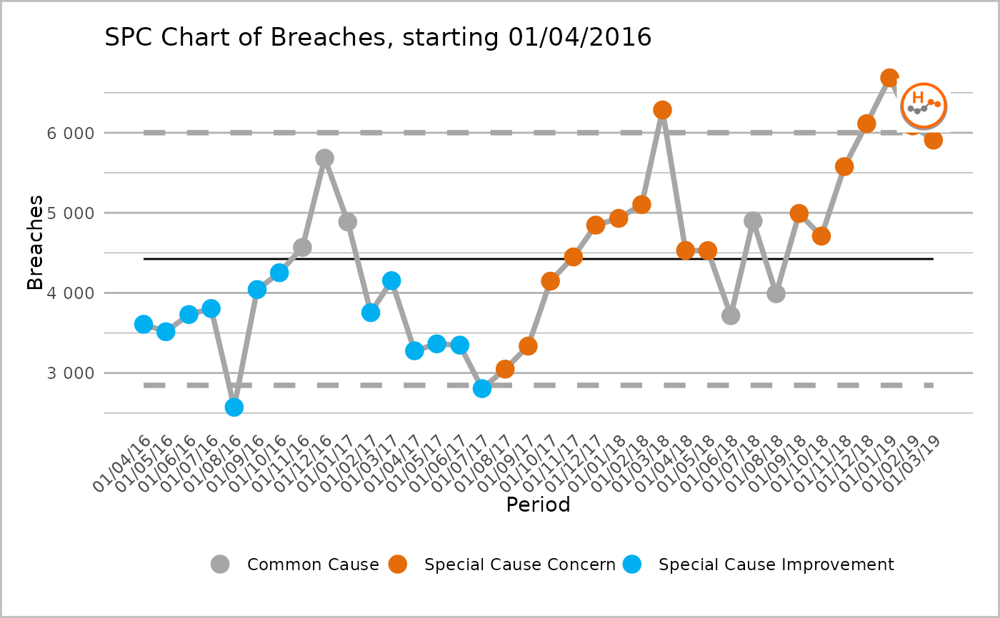
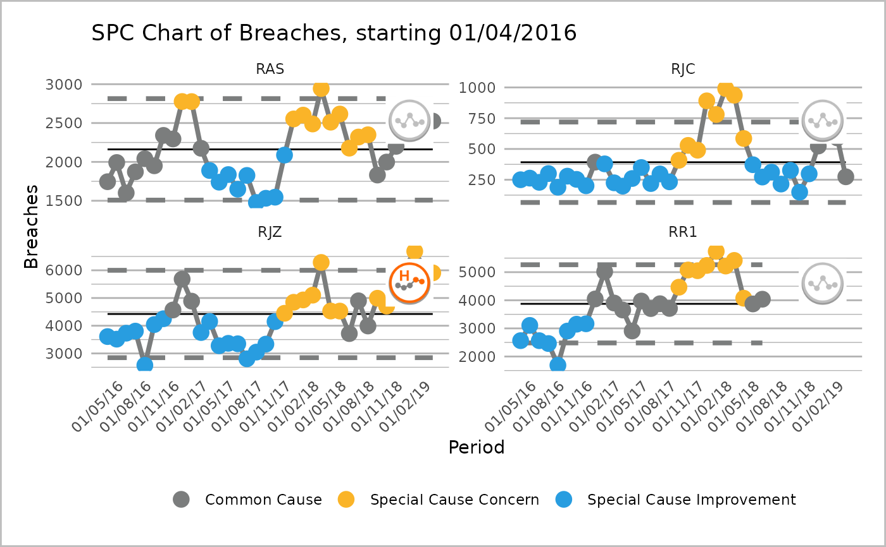
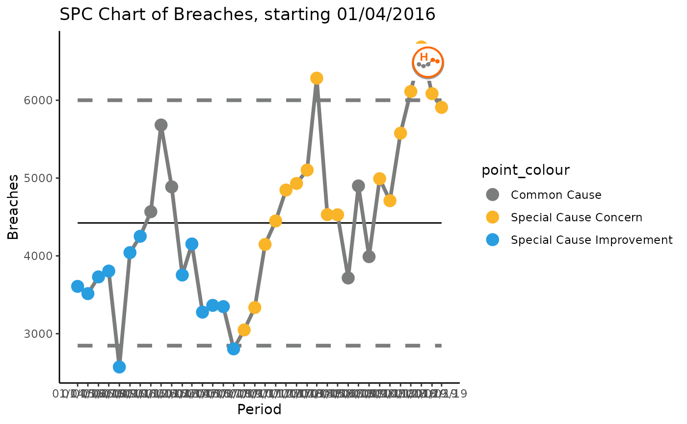

ptd_spc returns a plot object or data table with SPC values using NHSI
'plot the dots' logic.
Usage
ptd_spc(
.data,
value_field,
date_field,
facet_field,
rebase = ptd_rebase(),
fix_after_n_points = NULL,
improvement_direction = "increase",
target = ptd_target(),
trajectory,
screen_outliers = TRUE
)Arguments
- .data
A data frame containing a value field, a date field, and a category field (if for faceting). There should be no gaps in the time series for each category.
- value_field
Specify the field name which contains the value data, to be plotted on y axis. The field name can be specified using non-standard evaluation (i.e. without quotation marks).
- date_field
Specify the field name which contains the date data, to be plotted on x axis. The field name can be specified using non-standard evaluation (i.e. without quotation marks).
- facet_field
Optional: Specify field name which contains a grouping/ faceting variable. SPC logic will be applied to each group separately, with outputs combined. Currently accepts 1 variable only. The field name can be specified using non-standard evaluation (i.e. without quotation marks).
- rebase
Specify a date vector of dates when to rebase, or, if
facet_fieldis set, a named list of date vectors of when to rebase. Each item in the list should be named after the facet you wish to rebase. Seeptd_rebase().- fix_after_n_points
Specify a number points after which to fix SPC calculations.
- improvement_direction
Specify whether process improvement is represented by an increase or decrease in measured variable, or is neutral. Accepted values are 'increase' for increase as improvement, 'decrease' for decrease as improvement, and 'neutral' where neither direction represents an improvement. Defaults to 'increase'.
- target
Specify a single value, which will apply the same target to every facet of an SPC chart, or named values of targets, where the names correspond to the names of the facets, in order to have different targets for each facet. See
ptd_target().- trajectory
Specify a field name which contains a trajectory value. The field name can be specified using non-standard evaluation (i.e. without quotation marks).
- screen_outliers
Whether to screen for outliers when calculating the control limits. Defaults to
TRUE.
Value
An object of type ptd_spc_df. This is a data.frame which can be
further manipulated like any other data.frame. The default print() method
for ptd_spc_df is to call ptd_create_ggplot(), displaying the plot. If
you would like to get the data.frame, call as_tibble() or as.data.frame()
on the object.
Details
This function is designed to produce consistent SPC charts across Information Department reporting, according to the 'plot the dots' logic produced by NHSI. The function can return either a plot or data frame.
Examples
library(NHSRdatasets)
library(dplyr)
#>
#> Attaching package: ‘dplyr’
#> The following objects are masked from ‘package:stats’:
#>
#> filter, lag
#> The following objects are masked from ‘package:base’:
#>
#> intersect, setdiff, setequal, union
data("ae_attendances")
# Pick a trust at random to look at their data for two years
trust1 <- subset(ae_attendances, org_code == "RJZ" & type == 1)
# Basic chart with improvement direction decreasing
ptd_spc(trust1,
value_field = breaches, date_field = period,
improvement_direction = "decrease"
)

# Pick a few trust, and plot individually using facet
# Also set the x-axis scale to vary for each and date groups to 3 months
orgs <- c("RAS", "RJZ", "RR1", "RJC", "RQ1")
trusts4 <- filter(ae_attendances, org_code %in% orgs, type == 1)
s <- ptd_spc(trusts4,
value_field = breaches, date_field = period, facet_field = org_code,
improvement_direction = "decrease"
)
plot(s, fixed_y_axis_multiple = FALSE, x_axis_breaks = "3 months")

# Save the first chart as an object this time then alter the ggplot theme
my_spc <- ptd_spc(trust1,
value_field = "breaches", date_field = "period",
improvement_direction = "decrease"
)
plot(my_spc) + ggplot2::theme_classic()
